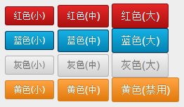

BUTTON(按钮)
默认效果自带圆角，阴影，内部渐变
IE9 以上浏览器支持圆角
【示例代码】：
<button class="red small" disabled >红色(小)</button>
<button class="red middle" >红色(中)</button>
<button class="red big" >红色(大)</button>
<br>
<button class="blue small" disabled >蓝色(小)</button>
<button class="blue middle" >蓝色(中)</button>
<button class="blue big" >蓝色(大)</button>
<br>
<button class="grey small" >灰色(小)</button>
<button class="grey middle" >灰色(中)</button>
<button class="grey big" >灰色(大)</button>
<br>
<button class="yellow small" >黄色(小)</button>
<button class="yellow middle" >黄色(中)</button>
<button class="yellow big" >黄色(中)</button>
【浏览器打开效果】：
